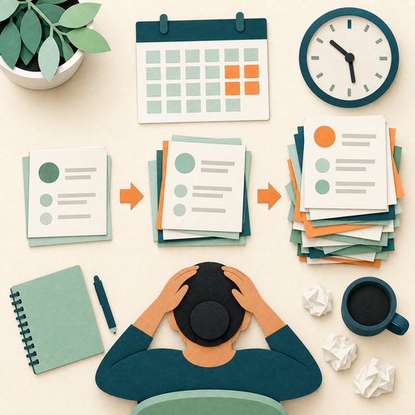

The definition
Burnout is commonly associated with chronic, unmanaged stress.

Image slotmodule3-lesson-1-1.png
Burnout at a glance
Burnout is complex and may result from a combination of internal and external factors. It does not always appear suddenly. Many people notice a gradual change in energy, motivation, health, and connection to their work.
Common reasons
Select a card to see more.
Systemic contributors
Select a card to see more.
A wider view
Burnout prevention also requires attention to conditions beyond individual resilience.
Image slot
module3-lesson-1-2.png
module3-lesson-1-2.png
Work that is sustainable
Systemic disparities can create chronic pressure when people have less access to advancement, support, or meaningful opportunities.
Important: Burnout should not be treated only as an individual failure to manage time. Personal practices matter, but workload, culture, fairness, resources, and organizational systems also influence whether work is sustainable.